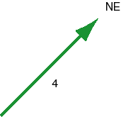

Choice (b) says that when the vector shown above is multiplied by -2 one obtains a vector pointing in the same direction, but with magnitude -8.
The magnitude of a vector, by definition, is never negative. Multiplying a vector by a negative number reverses the direction of the vector and changes the magnitude of the vector by a factor equal to the absolute value of the negative number.